Sam Shelffo-McGrath
Work
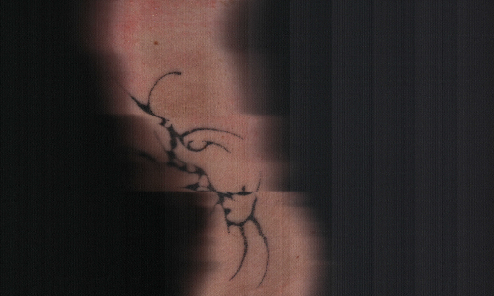
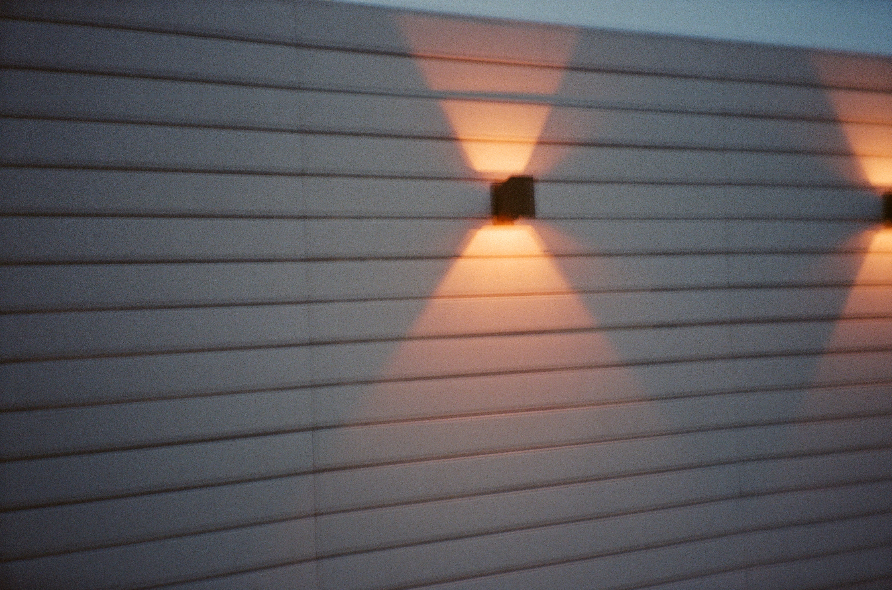
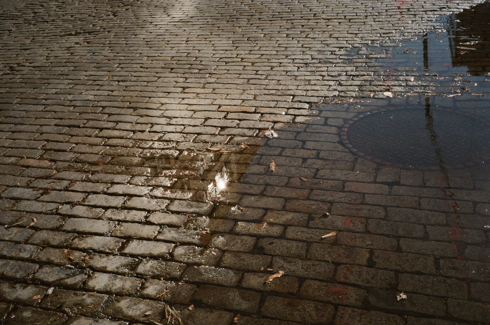
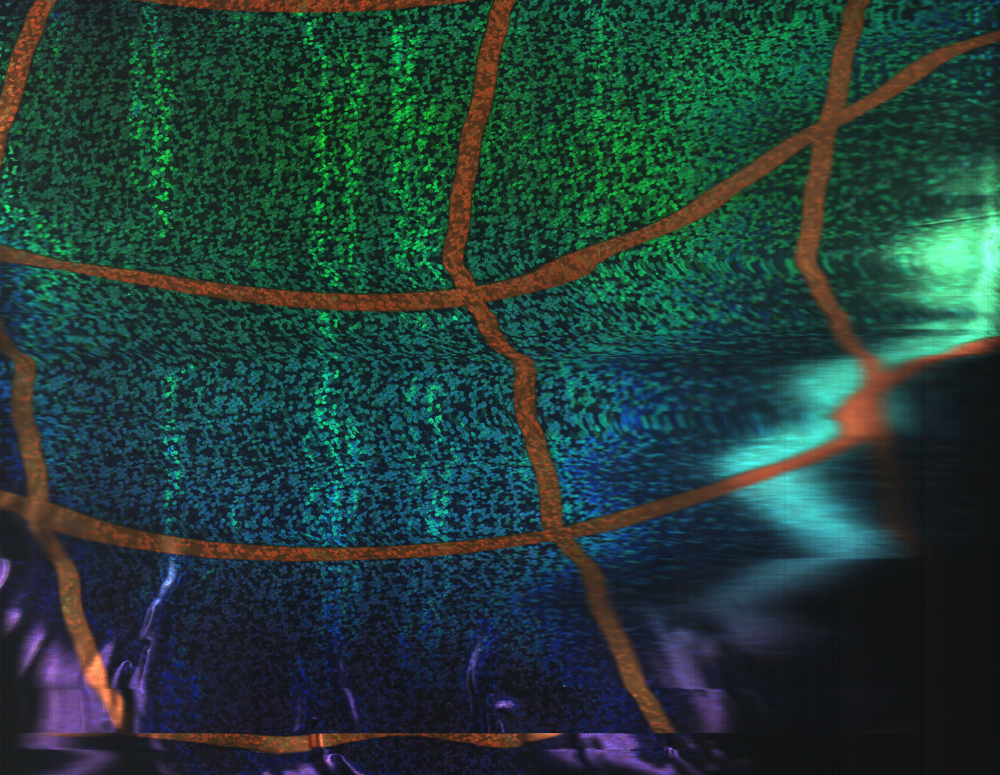
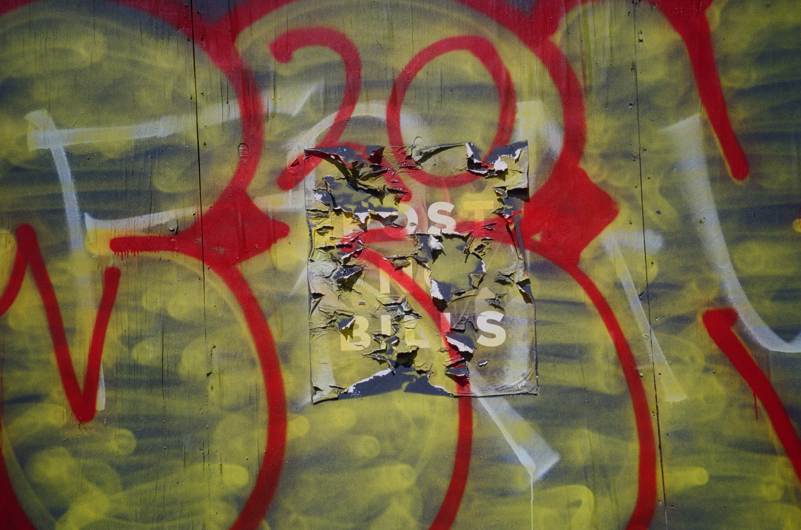
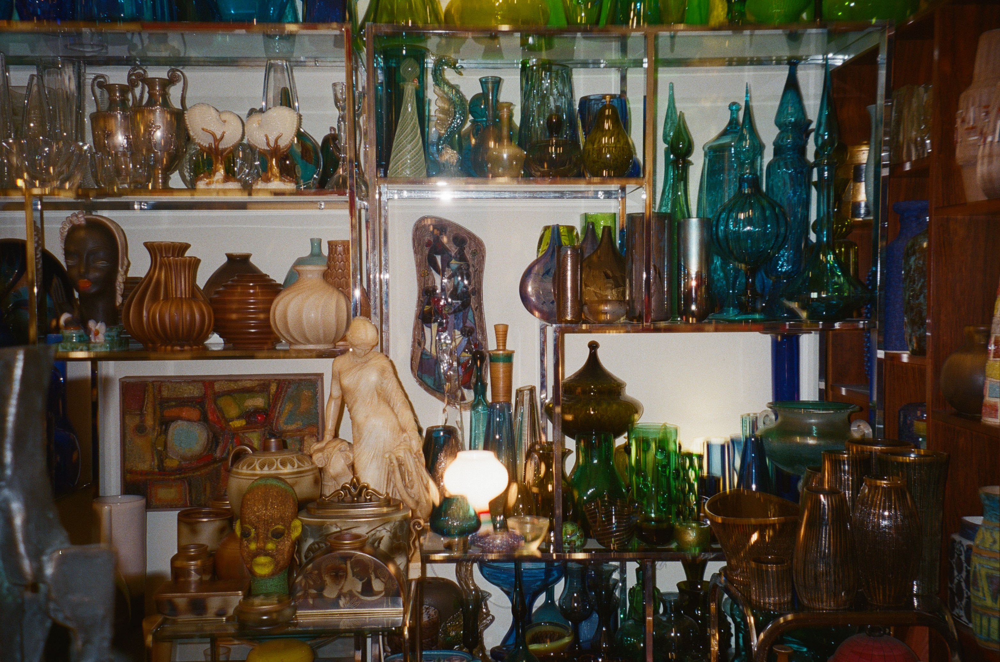
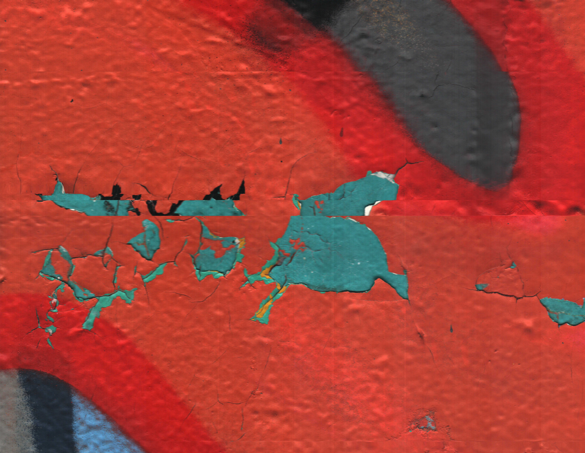
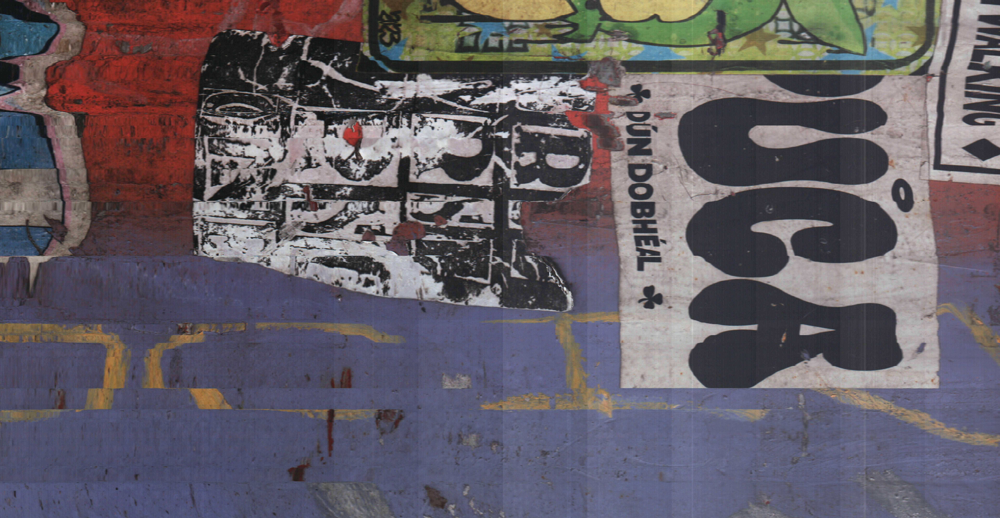
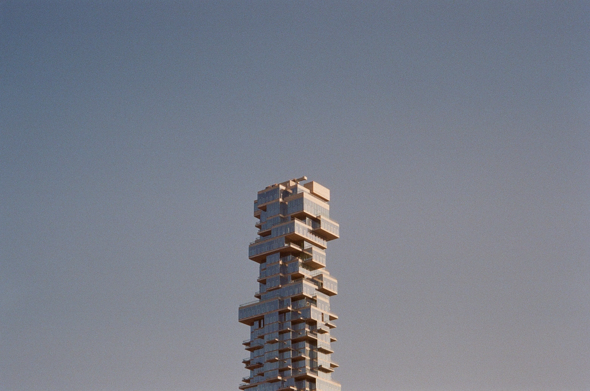
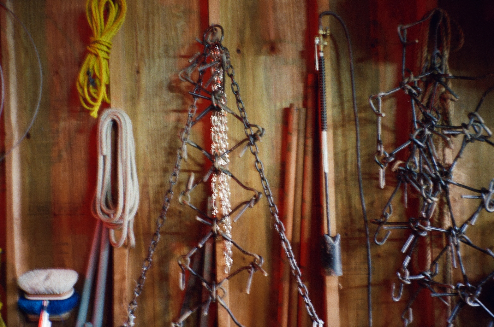
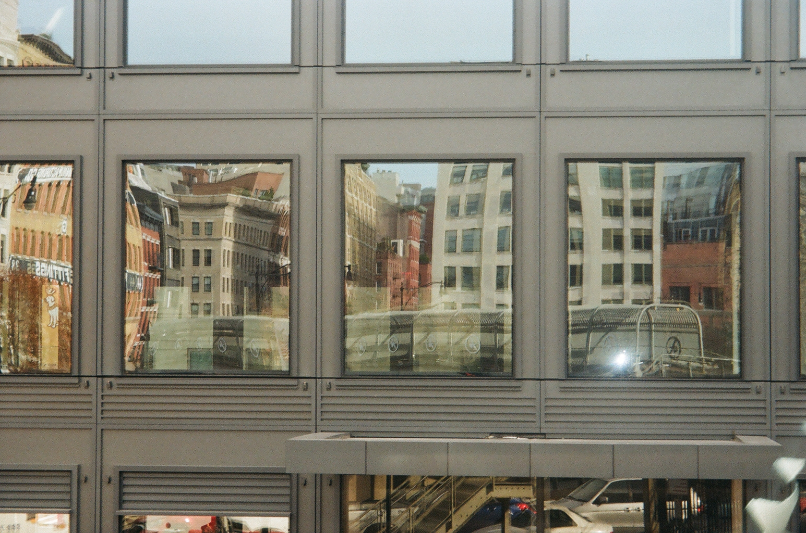
Projects
CV
EDUCATION:
university of chicago, B.A. in environmental and urban studies with honors, minors in GIS and architectural studies (2021-2025)
CURRENTLY:
transportation planner at cdm smith
PREVIOUSLY:
researcher for the chicago centuries project; studio manager trainee at the woodstock school of art; intern at the film forum, public interest research group, weill cornell medicine, & elsewhere.